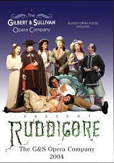

Nikitha Vedant Madabhushi Productions LTD
RUDDIGORE
ACT II
SCENE-Picture Gallery in Ruddigore Castle.
The walls are covered with full-length portraits of the Baronets of Ruddigore from the time
of James I.—the first being that of Sir Rupert, alluded to in the legend; the last, that of the
last deceased Baronet, Sir Roderic.
(Enter Despard and Margaret.They are both dressed in sober black
of formal cut, and present a strong contrast to their
appearance in Act I.)
DUET
CHARACTERS DISCUSSION
DES.
I once was a very abandoned person
MAR.
Making the most of evil chances.
DES.
Nobody could conceive a worse 'un
MAR.
Even in all the old romances.
DES.
I blush for my wild extravagances,But be so kind To bear in mind,
MAR.
We were the victims of circumstances!That is one of our blameless dances.
MAR.
I was once an exceedingly odd young lady
DES.
Suffering much from spleen and vapours.
MAR.
Clergymen thought my conduct shady
DES.
She didn't spend much upon linen-drapers.
MAR.
It certainly entertained the gapers. My ways were strange Beyond all range
DES.
Paragraphs got into all the papers.
DES.
We only cut respectable capers.
DES.
I've given up all my wild proceedings.
MAR.
My taste for a wandering life is waning.
DES.
Now I'm a dab at penny readings.
MAR.
They are not remarkably entertaining.
DES.
A moderate livelihood we're gaining.
MAR.
In fact we rule A National School.
DES.
The duties are dull, but I'm not complaining.
(Dance.)
DES.
We have been married a week.
MAR.
One happy, happy week!
DES.
Our new life—
MAR.
Is delightful indeed!
DES.
So calm!
MAR.
So unimpassioned! (Wildly)
.
Master, all this I owe to you! See, I am no longer wild and untidy. My hair is combed.
My face is washed. My boots fit!
DES.
Margaret, don't. Pray restrain yourself. Remember, you are now a district visitor.
MAR.
A gentle district visitor!
DES.
You are orderly, methodical, neat; you have your emotions well under control.
MAR.
I have! (Wildly)
. Master, when I think of all you have done for me, I fall at your feet. I embrace your ankles. I
hug your knees! (Doing so.)
DES.
Hush. This is not well. This is calculated to provoke remark. Be composed, I beg!
MAR.
Ah! you are angry with poor little Mad Margaret!
DES.
No, not angry; but a district visitor should learn to eschew melodrama. Visit the poor, by all means, and give them
tea and barley-water, but don't do it as if you were administering a bowl of deadly nightshade. It upsets them. Then
when you nurse sick people, and find them not as well as could be expected, why go into hysterics?
MAR.
Why not?
DES.
Because it's too jumpy for a sick-room.
MAR.
How strange! Oh, Master! Master!—how shall I express the all-absorbing gratitude that—(about to throw herself at his
feet).
DES.
Now! (Warningly).
MAR.
Yes, I know, dear—it shan't occur again. (He is seated—she sits on the ground by him.)
Shall I tell you one of
poor Mad Margaret's odd thoughts? Well, then, when I am lying awake at night, and the pale moonlight streams through the
latticed casement, strange fancies crowd upon my poor mad brain, and I sometimes think that if we could hit upon some word for you
to use whenever I am about to relapse—some word that teems with hidden meaning—like "Basingstoke"—it might recall me to my
saner self. For, after all, I am only Mad Margaret! Daft Meg! Poor Meg! He! he! he!
DES.
Poor child, she wanders! But soft—some one comes—Margaret—pray recollect yourself—Basingstoke, I beg!
Margaret, if you don't Basingstoke at once, I shall be seriously angry.
MAR.
(recovering herself).
Basingstoke it is!
DES.
Then make it so.
CHORUS
He yields! He answers to our call!
We do not ask for more.
A sturdy fellow, after all,
This latest Ruddigore!
All perish in unheard-of woe
Who dare our wills defy;
We want your pardon, ere we go,
For having agonized you so—
So pardon us—
So pardon us—
So pardon us—
Or die!
SONG
For happy the lily
That's kissed by the bee;
And, sipping tranquilly,
Quite happy is he;
And happy the filly
That neighs in her pride;
But happier than any,
A pound to a penny,
A lover is, when he
Embraces his bride!
Tabular Form
| Characters |
Singers |
Money Offered |
| Desperd |
Rich |
5 million |
| margaret |
Rob |
10 million |
| Baronets |
Rose |
15 million |
link to other page
